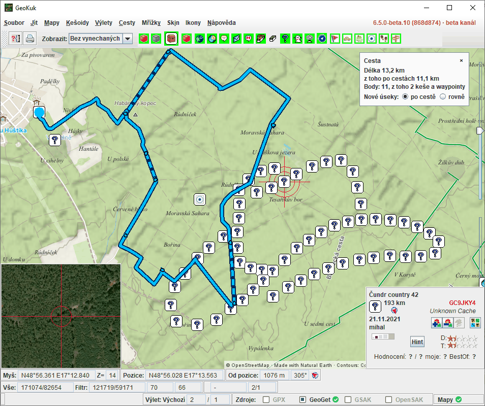

Plánování geovýletů na mapách
GeoKuk zobrazí keše a další kešoidy na online i offline mapách, pomůže je vyfiltrovat, naplánovat výlet a nakreslit cestu. Zdarma, česky a open source.
Pro Windows, Linux a macOS.

Co umí
Keše odkudkoli
Načte GPX, databáze GeoGetu, GSAKu a OpenSAKu i fotky s GPS. Zvládne i statisíce keší.
Offline mapy
Vektorové mapy (mapsforge) vykreslené přímo v počítači, bez internetu. Od verze 6.5 je stáhnete přímo z programu i s trasami a vrstevnicemi.
Online podklady
Mapy.cz, OpenStreetMap, ortofoto a Základní topografická mapa ČÚZK, ortofoto Slovenska a vlastní uživatelské mapy.
Filtry a zvýraznění
Filtr podle typu, stavu, obtížnosti, terénu i favoritů, popisky, kruhy a obsazenost 161 m.
Výlety a cesty
Výlet Lovím / Teď ne, kreslení cest, export do GPX a do GeoGetu, tisk a export mapy.
Plánovač challenge
Chybějící sektory 360° a políčka matice D/T s kandidáty přímo na mapě. Nově ve verzi 6.5.
Stažení
Windows
Zip obsahuje i Javu, nic dalšího se neinstaluje. Rozbalte ho třeba do C:\
a poprvé spusťte GeoKuk-prvni-spusteni.cmd. Nové verze se instalují samy.
Linux a macOS
Potřebujete Javu 8 nebo novější. Stáhněte geokuk.jar do vlastní složky
a spusťte java -jar geokuk.jar.
GeoKuk se neinstaluje: všechno, co si ukládá, je ve složce data vedle programu.
Podrobný postup je na stránce
Instalace a první spuštění,
starší verze a testovací bety v Releases.
Používáte starší verzi?
Verze 6 se instaluje do vlastní složky a starou verzi nepřepíše. Nastavení převezme při prvním spuštění; jak přenést keše, výlety, cesty a ikony, popisuje stránka Přechod ze starší verze. Co je ve verzích nového, je v přehledu změn.
Nápověda a kontakt
- Nápověda (wiki) – návody k jednotlivým funkcím.
- Diskuze na fóru Geocaching.cz – oznámení nových verzí, dotazy a zkušenosti uživatelů.
- Hlášení chyb a nápady – nejlépe přímo z programu: Nápověda > Zadat problém.
- Zdrojový kód a jak přispět.
Původ
GeoKuk napsal Martin Veverka. K vývoji přispěli Dan Stahr (verze 4) a Jiří Bílek (verze 5.1.1c). Od roku 2026 ho dál vyvíjí GeoKuk community. Starší verze 3.x až 5.2.0 zůstávají ke stažení v archivu původního repozitáře. Program je šířen pod licencí GNU GPL v3.